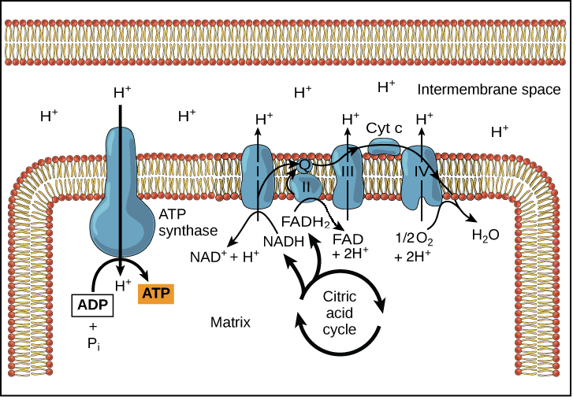
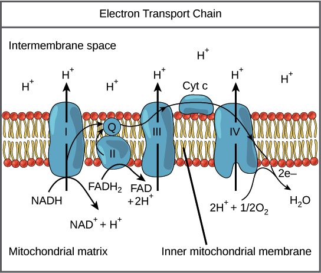
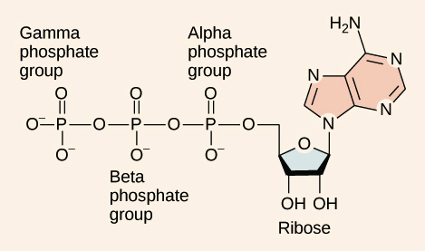
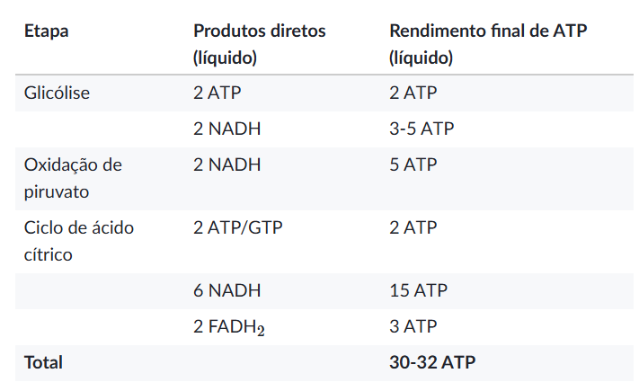

Fosforilação Oxidativa · Cadeia Transportadora de Elétrons + Quimiosmose + ATP Sintase
1. Por que Precisamos de Oxigênio?
O Papel Real do O₂ — Não é o que parece
O O₂ não entra na glicólise e não é usado diretamente no Krebs.
Ele é o aceptor final de elétrons na cadeia transportadora de elétrons.
Sem O₂ → cadeia trava → NADH/FADH₂ não descarregam → falta NAD⁺/FAD →
Krebs e glicólise param → produção de ATP colapsa.
O O₂ é o "ralo" da cadeia. Sem ele, tudo entope.
2. Visão Geral da Fosforilação Oxidativa

Cadeia transportadora de elétrons + ATP sintase — NADH/FADH₂ entregam elétrons; H⁺ bombeado para o espaço intermembrana; ATP sintase usa o retorno de H⁺ para produzir ATP (OpenStax)
NADH/FADH₂ → Cadeia Transportadora de Elétrons
↓
H⁺ bombeado para espaço intermembrana
↓
Gradiente eletroquímico de H⁺ (força próton-motriz)
↓
H⁺ retorna pela ATP Sintase
↓
ADP + Pi → ATP (~24-28 ATP por glicose)
3. Cadeia Transportadora de Elétrons (CTE)
Série de proteínas e moléculas orgânicas inseridas na membrana interna da mitocôndria (cristas). Os elétrons passam de componente em componente, de alta energia → baixa energia, liberando energia que bombeia H⁺.

Os 4 complexos da CTE — NADH entra no Complexo I; FADH₂ entra no Complexo II; Ubiquinona e Citocromo c como transportadores móveis; O₂ recebe elétrons no final (OpenStax)
Complexo I — NADH:Ubiquinona Oxirredutase
NADH → NAD⁺ + H⁺ + 2e⁻
Elétrons → Ubiquinona (Q)
Bombeia → 4 H⁺ para o espaço intermembrana
NADH doa elétrons e volta a ser NAD⁺ (disponível para glicólise/Krebs de novo).
Por isso FADH₂ rende menos ATP (~1,5) do que NADH (~2,5). O atalho pelo Complexo II pula o H⁺ bombeado pelo I.
Transportadores Móveis:
Ubiquinona / Coenzima Q — molécula lipossolúvel que circula dentro da membrana lipídica, carregando elétrons dos Complexos I e II para o III. Citocromo c — proteína pequena no espaço intermembrana, leva elétrons do Complexo III para o IV.
Complexo III — Ubiquinol:Citocromo c Oxirredutase
QH₂ → Q + 2 H⁺ (espaço intermembrana) + 2e⁻
Elétrons → Citocromo c
Bombeia → H⁺ para o espaço intermembrana
Complexo IV — Citocromo c Oxidase
4 Citocromo c (2e⁻ cada) + O₂ + 4 H⁺
↓
2 H₂O (O₂ recebe 4 elétrons + 4 H⁺)
Bombeia → H⁺ para o espaço intermembrana
Único ponto onde o O₂ é consumido diretamente. O O₂ é o aceptor final de elétrons.
4. Rota Completa dos Elétrons
NADH ──────────────────┐
Complexo I
↓
Ubiquinona (Q) ←── FADH₂ via Complexo II
↓
Complexo III
↓
Citocromo c
↓
Complexo IV
↓
O₂ + 4 H⁺ → 2 H₂O
H⁺ bombeado em cada complexo
Complexos I, III e IV bombeiam H⁺. Complexo II não bombeia H⁺ diretamente.
Por isso NADH (entra no I) rende mais H⁺ bombeados → mais ATP do que FADH₂ (entra no II).
5. Gradiente de H⁺ e Força Próton-Motriz
Bombeamento contínuo de H⁺ pela cadeia cria:
ESPAÇO INTERMEMBRANA: [muito H⁺, carga +]
────────────── membrana interna ──────────────
MATRIZ MITOCONDRIAL: [pouco H⁺, carga −]
→ Diferença de concentração + diferença de carga elétrica
= FORÇA PRÓTON-MOTRIZ (como uma bateria)
Analogia da Represa
A cadeia transportadora bombeia H⁺ para cima, enchendo a represa.
Os H⁺ querem voltar para a matriz (a favor do gradiente).
Só há um caminho de retorno: a ATP sintase (a turbina).
A energia do fluxo de H⁺ faz a turbina girar e produzir ATP.
6. Quimiosmose e ATP Sintase

Estrutura do ATP — adenosina trifosfato: base adenina + ribose + 3 grupos fosfato; a hidrólise da ligação γ-fosfato libera energia (~30,5 kJ/mol)
H⁺ (espaço intermembrana)
↓ flui pela ATP sintase (a favor do gradiente)
H⁺ (matriz mitocondrial)
↓ energia do fluxo faz rotor girar
ATP sintase muda conformação
↓
ADP + Pi → ATP
~4 H⁺ por ATP sintetizado
Quimiosmose — Definição
Processo em que a energia armazenada em um gradiente de prótons é usada para realizar trabalho.
Na célula: o gradiente de H⁺ move a ATP sintase, que produz ATP.
Responsável por mais de 80% do ATP total da respiração celular.
Proteínas de Desacoplamento — "Gerar Calor em vez de ATP"
Em mamíferos hibernantes (ursos), células adiposas marrons têm proteínas de desacoplamento
na membrana interna. Elas abrem um canal alternativo para H⁺ voltarem sem passar pela ATP sintase.
Resultado: energia do gradiente vira calor (termorregulação no inverno).
7. Rendimento de ATP — Por que NADH e FADH₂ rendem valores diferentes?
1 NADH → ~2,5 ATP
Elétrons entram no Complexo I.
Complexos I + III + IV bombeiam ~10 H⁺.
10 H⁺ ÷ 4 H⁺/ATP = ~2,5 ATP.
1 FADH₂ → ~1,5 ATP
Elétrons entram no Complexo II.
Complexos III + IV bombeiam ~6 H⁺.
6 H⁺ ÷ 4 H⁺/ATP = ~1,5 ATP.
8. Saldo Total — 30–32 ATP por Glicose

Rendimento de ATP por etapa da respiração celular (Khan Academy PT) — total 30–32 ATP por glicose
Etapa
ATP direto
Via NADH (~2,5)
Via FADH₂ (~1,5)
Total
Glicólise
2
2 NADH → ~3–5*
—
~5–7
Oxidação do Piruvato
—
2 NADH → ~5
—
~5
Ciclo de Krebs
2 GTP
6 NADH → ~15
2 FADH₂ → ~3
~20
TOTAL
4
~26–28 via fosforilação oxidativa
~30–32 ATP
*NADH da glicólise é formado no citosol. Dependendo do sistema de transporte do tecido, rende 3 ou 5 ATP — por isso a variação 30–32.
Por que 30–32 e não 36–38 como em livros antigos?
A versão moderna considera o custo energético do transporte de ADP para dentro e ATP para fora da mitocôndria.
Esse custo reduz o rendimento de ~36 para ~30–32. Use 30–32 em provas de medicina.
9. Regulação — A Célula Não Produz ATP Infinitamente
Situação
Sinal
Efeito sobre a Respiração
Muito ATP, pouco ADP
Célula abastecida
Respiração desacelera
Muito ADP, pouco ATP
Célula precisa de energia
Respiração acelera
O ADP é o "Tanque Vazio"
ADP sinaliza para a mitocôndria que precisa produzir mais ATP.
A taxa de transporte de elétrons é diretamente influenciada pela relação ATP/ADP.
10. Sequência Completa da Respiração Celular
GLICOSE
↓ Glicólise (citosol)
2 Piruvatos + 2 ATP + 2 NADH
↓ entram na mitocôndria
Oxidação do Piruvato (matriz)
2 Acetil-CoA + 2 CO₂ + 2 NADH
↓
Ciclo de Krebs (matriz) — 2 voltas
6 NADH + 2 FADH₂ + 2 GTP + 4 CO₂
↓ NADH e FADH₂ levam elétrons para:
Cadeia Transportadora (membrana interna)
H⁺ bombeado → Espaço intermembrana
↓ H⁺ volta pela
ATP Sintase
ADP + Pi → ATP (×24–28)
↓ elétrons chegam ao final em:
O₂ + 4H⁺ → 2 H₂O
TOTAL: ~30–32 ATP por molécula de glicose
A Frase que Resume Tudo
"A energia da glicose não vira ATP direto. Ela vira elétrons carregados em NADH e FADH₂.
Esses elétrons descem a escada da cadeia transportadora, bombeando H⁺ no caminho.
O H⁺ acumulado volta pela turbina ATP sintase, que recarrega ADP em ATP.
O O₂ é o ralo que recebe os elétrons no final — sem ele, tudo entope."
11. Erros Clássicos
Erro 1 — "O₂ é usado no Krebs"
Não. O O₂ é aceptor final de elétrons no Complexo IV, no final da CTE. Krebs não consome O₂ diretamente.
Erro 2 — "NADH vira ATP diretamente"
Não. NADH → Complexo I → elétrons → gradiente de H⁺ → ATP sintase → ATP. São etapas separadas.
Erro 3 — Saldo de 36–38 ATP
Saldo moderno é ~30–32 ATP. O valor 36–38 não considera o custo de transporte mitocondrial.
Erro 4 — Complexo II rende o mesmo que o I
Não. Complexo II (FADH₂) não bombeia H⁺ diretamente → menos gradiente → FADH₂ rende ~1,5 ATP vs NADH ~2,5 ATP.
Erro 5 — ATP sintase gasta ATP
Não. A ATP sintase é uma turbina que produz ATP usando o fluxo de H⁺. Ela transforma energia do gradiente em ligação química.